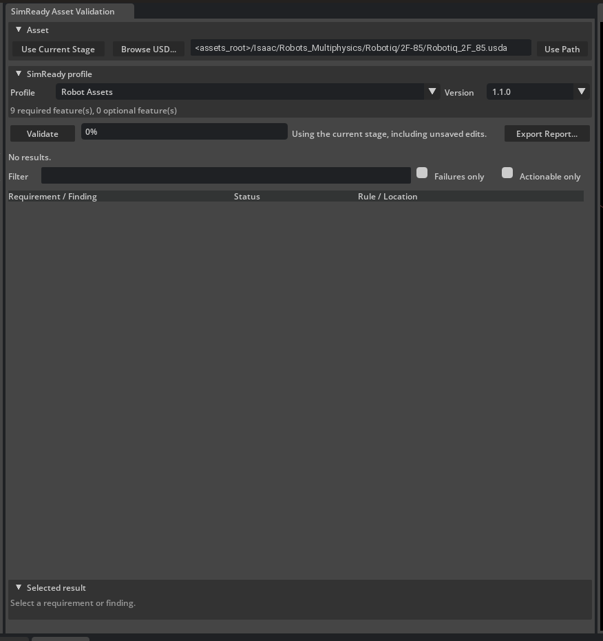
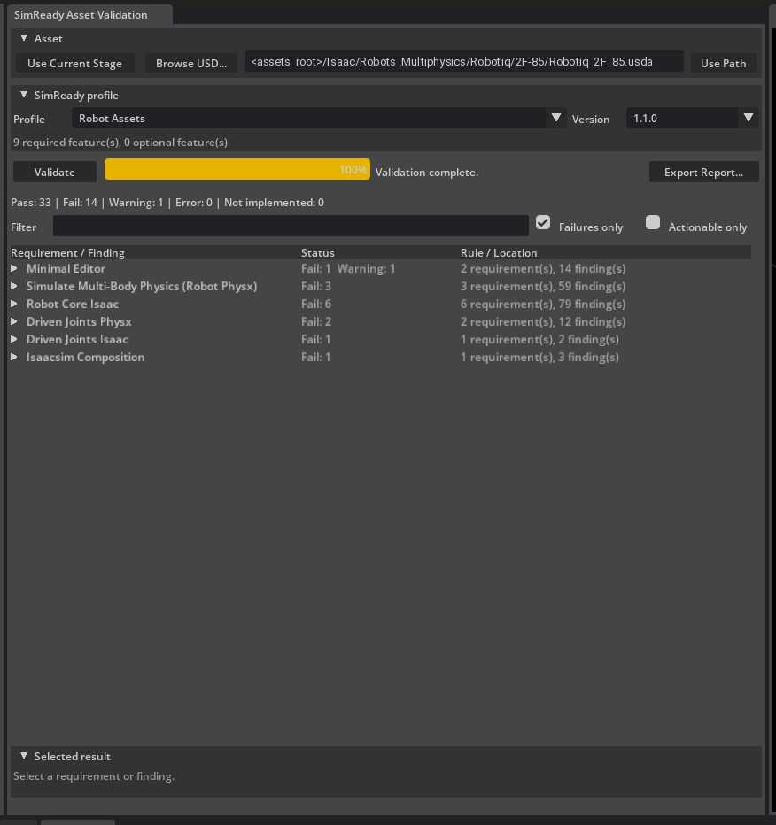

资产验证#
Isaac Sim 根据共享的 SimReady 要求验证 USD 资产。此前内置于 isaacsim.asset.validation 扩展中的验证规则已迁移至 SimReady 基础验证层级，并现已成为唯一的真实来源。
虽然某些规则涵盖推荐指南，例如 资产结构，但许多规则对于资产在 Isaac Sim 中正常工作至关重要。
SimReady 基础#
权威规范——包括能力、特性、配置文件以及每项要求的文档——均位于 SimReady 基础开源仓库中：
完整规范位于该仓库的 nv_core/sr_specs/docs/ 目录下。相关入口点包括：
入门指南：
nv_core/sr_specs/docs/guides/getting_started.md— 介绍 SimReady 的目标用户、如何选择配置文件以及后续步骤。验证工作流：
nv_core/sr_specs/docs/guides/validate_workflow.md— 运行simready-validate、预期输出及故障排查。功能与要求：
nv_core/sr_specs/docs/capabilities/— 每项要求的文档（例如RB.008刚体详细质量、DJ.004关节具有驱动或模仿 API、RC.005在物理层中编写物理属性）。
规则所在位置#
规则分布在两个 SimReady Foundation 层级中，每个层级均作为 Python 包发布：
层级包 |
内容 |
|---|---|
|
通用物理和几何规则：刚体、碰撞体、驱动关节（驱动器、关节状态、模仿、变换）以及关节链。 |
|
Isaac 特定规则：机器人核心（命名、文件夹整洁性、机器人架构、物理层编写、缩略图）以及机器人材质（嵌套材质、顶层 Looks）。 |
验证运行方式#
isaacsim.asset.validation 扩展预捆绑了两个层级 wheel 包，并在启动期间导入其功能中心。层级装饰器将其规则注册到 omni.asset_validator.core 使用的共享 usd_validation_nvidia 注册表中。您可以从 SimReady Asset Validation 窗口、Asset Validator 窗口或通过 simready-validate 框架运行规则。
该扩展默认启用。如果它被禁用，可以通过搜索 isaacsim.asset.validation 从 Extension Manager 重新启用它。
要打开基于配置的工作流，请导航至 Window > SimReady Asset Validation。若要进行细粒度的规则选择，请导航至 Window > Asset Validator。有关 Asset Validator 窗口的更多信息，请参阅 Asset Validator。
注意
某些检查——特别是非相邻碰撞网格检查——会运行实时的 PhysX 模拟步骤，因此需要 Isaac/Kit 物理运行时。在仅支持 USD 的独立环境中，这些检查不会报告结果，而不是失败。
运行验证规则#
Isaac Sim 提供了两种互补的方式来运行 SimReady 验证：
Window > SimReady Asset Validation — 针对机器人和道具资产的基于配置的工作流。日常机器人资产 QA 建议优先使用此方式。
Window > Asset Validator — 提供类别和规则复选框，用于细粒度的规则选择。当需要在混合类别中启用或禁用单个规则时，建议优先使用此方式。
本节其余部分将介绍 SimReady Asset Validation 窗口。
SimReady Asset Validation 窗口#
从 Window > SimReady Asset Validation 打开该窗口。它会停靠在视口左侧。


该扩展在 isaacsim.exp.full 中默认启用。如果该扩展被禁用，请从 Extension Manager 中同时启用 isaacsim.asset.validation 和 isaacsim.asset.validation.ui。
使用 Robot Assets Profile 验证机器人资产#
打开或创建包含要验证的机器人的 USD stage。
导航至 Window > SimReady Asset Validation。
在 Asset 部分，选择 Use Current Stage，以便验证器包含当前打开的 stage 上未保存的编辑。 或者，选择 Browse USD… 或输入路径并选择 Use Path，以在不将其加载为当前 stage 的情况下验证文件。
在 SimReady profile 部分，打开 Profile 组合框并选择 Robot Assets。
选择器显示可读标签。Robot Assets 是内置
Robot-Body-Isaacprofile 的显示名称。Props 是Prop-Robotics-Isaac的显示名称。确认 Version 值。默认选择最新的内置版本。
查看 profile 控件下的必需和可选功能计数。在验证之前，启用您希望包含的任何可选功能。
选择 Validate。
验证完成后，摘要栏会报告 Pass、Fail、Warning、Error 和 Not implemented 的数量。在结果树中展开功能组，以检查各个需求和发现项。

示例：审查失败项#
上面的截图显示了针对捆绑的 Robotiq 2F-85 夹爪执行的一次典型 Robot Assets 运行：
摘要：
Pass: 33 | Fail: 14 | Warning: 1功能组 Minimal Editor 包含一个失败的
AA.001需求（anchored-asset-paths），其中有 13 个发现项每个发现项行列出消息、严重级别以及其适用的图层或 prim
Selected result 面板显示受影响的位置、功能、类别、验证器类、指导文本，以及 是否提供自动修复
启用 Failures only 以隐藏通过的需求并专注于修复：


窗口控件#
资产#
控件 |
描述 |
|---|---|
Use Current Stage |
验证当前打开的 USD 阶段，包括未保存的编辑。 |
Browse USD… |
从磁盘选择 |
路径字段 / Use Path |
输入或粘贴资产 URI 或绝对路径，然后将其应用为验证目标。 |
SimReady 配置文件#
控件 |
描述 |
|---|---|
Profile |
选择 SimReady 配置文件。默认过滤标签包括 Robot Assets 和 Props。 |
版本 |
选择所选配置文件的版本。版本按从新到旧排序。 |
可选功能复选框 |
当配置文件声明了可选功能时显示。启用的可选功能将包含在下一次运行中。 |
命令栏#
控件 |
描述 |
|---|---|
验证 |
启动异步配置文件验证运行。在未选择资产和配置文件之前处于禁用状态。 |
取消 |
仅在运行处于活动状态时显示。取消正在进行的验证任务。 |
进度条 |
显示当前运行的完成百分比。 |
状态文本 |
报告阶段或路径选择、进度、完成情况和错误消息。 |
导出报告… |
在运行完成后，将所有需求结果和发现项写入 JSON 文件。 |
结果和过滤器#
控件 |
描述 |
|---|---|
摘要栏 |
汇总通过、失败、警告、错误和未实现的数量。 |
过滤 |
对需求代码、名称、指南、类别、规则和发现项消息进行不区分大小写的搜索。 |
仅显示失败项 |
隐藏已通过的需求。 |
仅显示可操作项 |
仅显示至少包含一个带有验证器提供修复方案发现项的需求。 |
结果树 |
按功能、需求和发现项对结果进行分组。列显示状态以及规则或 USD 位置。 |
所选结果#
选择一个需求或发现项以填充详细信息面板。
控件 |
描述 |
|---|---|
位置横幅 |
高亮显示受影响的 USD 路径或 prim，以及是否提供自动修复。 |
指导信息和发现项文本 |
需求指导信息、严重性、验证器消息，以及建议的操作（如果存在）。 |
打开需求文档 |
打开所选代码对应的已发布 SimReady 需求页面。 |
复制详细信息 |
将所选需求和发现项的详细信息复制到剪贴板。 |
选择受影响的 prim |
当 prim 路径可用时，在当前 stage 上选择报告的 prim。 |
应用修复 |
仅当发现项提供修复回调且当前 stage 上存在有效的编辑目标时启用。显示确认对话框，应用修复但不保存 stage，并重新运行验证。 |
注意
对于仅通过文件路径验证的资产，不提供修复功能。应用修复后，stage 永远不会自动保存。
导出报告… 将所有需求结果和发现项写入 JSON 文件，包括每个发现项的 profile、所选功能、状态摘要、验证器规则、严重性、USD 位置和修复建议。
验证规则参考#
下表枚举了 SimReady 基础层级（以及 Isaac 运行时碰撞检查）在 Asset Validator 中显示的所有注册规则，并按其注册类别进行分组。每个需求的规范文档位于 SimReady Foundation 仓库的 nv_core/sr_specs/docs/capabilities/ 中。
类别 |
关注点 |
规则 |
|---|---|---|
|
资产引用可移植性（锚定路径、支持的文件类型）。 |
2 |
|
关节根节点存在性及碰撞网格冲突检查。 |
2 |
|
物料清单（BOM）的存在性及结构完整性。 |
1 |
|
网格碰撞体近似要求。 |
1 |
|
一致性元数据打包要求。 |
1 |
|
网格拓扑、法线、范围、定位及枢轴点。 |
12 |
|
哈希对象打包一致性。 |
1 |
|
Prim 层级、默认 Prim 及 Xform 分组规则。 |
8 |
|
Isaac Sim 载荷/引用组合结构。 |
1 |
|
元数据文件格式打包要求。 |
1 |
|
Prim、文件、目录命名及路径解析规则。 |
8 |
|
包定义有效性。 |
1 |
|
驱动器、关节状态、模仿 API、变换及关节拓扑。 |
11 |
|
可抓取资产标注要求。 |
1 |
|
夹爪站点 API（Isaac 格式）。 |
1 |
|
关节连接性及关节嵌套。 |
3 |
|
碰撞体上的物理材质绑定。 |
1 |
|
刚体、质量及碰撞体配置。 |
15 |
|
机器人命名、文件夹整洁度、架构、物理层编写、缩略图。 |
9 |
|
机器人材质嵌套及顶层 Looks 放置。 |
2 |
|
SimReady 能力及缩略图要求。 |
2 |
|
舞台元数据：上轴、每单位米/千克、时间码。 |
6 |
AtomicAsset#
要求 |
规则名称 |
描述 |
|---|---|---|
|
AnchoredAssetPathsChecker |
资产引用应使用锚定路径 |
|
SupportedFileTypesChecker |
资产必须仅使用受支持的文件类型 |
BaseArticulation#
要求 |
规则名称 |
描述 |
|---|---|---|
|
HasArticulationRoot |
铰接 USD 阶段必须包含且仅包含一个应用了 UsdPhysicsArticulationRootAPI 的 prim。 |
|
NonAdjacentCollisionMeshesDoNotClash |
验证非相邻碰撞网格是否不相交。该检查会运行实时的 PhysX 模拟步骤，因此需要 Isaac/Kit 物理运行时。 |
BomStructure#
要求 |
规则名称 |
描述 |
|---|---|---|
|
BomStructureChecker |
BOM 是一个由名称 com.nvidia.simready.packaging.bom.json 标识的元数据文件。它必须列出包中的所有内容文件及其各项字段，使用正斜杠相对路径且不得有重复项。 |
ColliderApproximations#
要求 |
规则名称 |
描述 |
|---|---|---|
|
ColliderApproximationsCapabilityChecker |
每个网格碰撞体（应用了 USDPhysics.CollisionAPI 和 USDPhysics.MeshCollisionAPI 的 Mesh prim）都必须具有用于高效碰撞检测的 SDF（有符号距离场）近似。 |
ConformanceMetadata#
要求 |
规则名称 |
描述 |
|---|---|---|
|
ConformanceMetadataChecker |
包 MAY（可以）包含符合性元数据文件，用于记录 SimReady Foundations 验证结果，并遵循定义的命名和 JSON 架构约定 |
Geometry#
要求 |
规则名称 |
描述 |
|---|---|---|
|
ImageableGeometryChecker |
资产必须包含至少一个可成像几何体（Imageable Geometry） |
|
UsdGeomExtentChecker |
可界定几何图元必须具有有效的 extent 值。 |
|
ManifoldChecker |
网格几何体必须是流形（manifold）的 |
|
CoincidentMeshChecker |
网格不应共享完全相同的空间 |
|
ValidateTopologyChecker |
网格拓扑必须有效 |
|
MeshXformPositioningChecker |
网格应通过 xform 操作进行定位，而不是通过将变换“烘焙”到点位置中。 |
|
AssetOriginPositioningChecker |
几何体的定义应确保资产在原点 (0,0,0) 处正确定位和定向。 |
|
AssetPivotPlacementChecker |
资产的枢轴点（pivot point）应合理放置：对于地面平面物体，应位于物体底部的中心；对于围绕特定点旋转的物体，应位于旋转中心。 |
|
NormalsExistChecker |
所有非细分网格必须包含法线。 |
|
NormalsShouldBeCorrectChecker |
网格法线值必须有效，以生成正确的着色。 |
|
NormalsWindingsChecker |
网格中面的缠绕顺序必须正确表示面的朝向（正面/背面）。 |
|
GeomShallBeMeshChecker |
所有几何体都应使用 UsdGeomMesh 模式表示为非细分网格图元。 |
HashObjectFormat#
要求 |
规则名称 |
描述 |
|---|---|---|
|
HashObjectFormatChecker |
哈希字段必须是包含至少一个 sha256 键的对象，其值为小写十六进制。为了性能考虑，实现方在可用时 SHOULD 同时包含 blake3 和/或 blake2b。当存在 content_hash 或 package_hash 时，其 sha256 值 MUST 使用本要求中定义的确定性算法进行计算。 |
Hierarchy#
要求 |
规则名称 |
描述 |
|---|---|---|
|
HierarchyHasRootChecker |
层级结构中的所有 prim 必须是单个根 prim 的直接或间接后代，以防止出现分散或断开的 Xform 层级结构。 |
|
ExclusiveXFormParentChecker |
每个 UsdGeomGprim 必须具有一个具有特定变换操作和层级约束的父级 Xform。 |
|
RootPrimXformableChecker |
层级的根 prim 必须是可变换的，这意味着其 prim 类型必须继承自 UsdGeomXformable，并能够接收变换操作。 |
|
StageHasDefaultPrimChecker |
Stage 必须指定一个默认 prim 以定义根入口点。 |
|
PlaceablePosableXformableChecker |
所有代表需要放置、摆位或动画的独立对象或组的 prim 都应继承自 UsdGeomXformable。 |
|
LogicalGeometryGroupingChecker |
几何体应在父级 Xform 下进行分组，其方式应符合对象的结构逻辑以及在布局或仿真中的预期用途。 |
|
KinematicChainHierarchyChecker |
对于资产（例如具有多个关节的机器人），层级结构应反映运动链，并为每个可变换的连杆提供适当的 Xform。 |
|
UndefinedPrimsChecker |
资产不得包含未定义的 prim（overs）。 |
IsaacComposition#
要求 |
规则名称 |
描述 |
|---|---|---|
|
IsaacCompositionCapabilityChecker |
资产必须使用结构化 payload 和引用系统以及适当的文件组织方式，正确组合以用于 Isaac Sim。 |
MetadataFiles#
要求 |
规则名称 |
描述 |
|---|---|---|
|
MetadataFilesChecker |
元数据文件必须采用 UTF-8 编码的 JSON 格式，使用反向域名命名，并遵循一次写入语义 |
命名路径#
要求 |
规则名称 |
描述 |
|---|---|---|
|
PrimNamingConventionChecker |
Prim 应遵循一致的命名规范 |
|
FileNamingConventionChecker |
USD 文件应遵循一致的命名规范 |
|
DirectoryStructureChecker |
资产目录应使用一致的命名和逻辑组织方式 |
|
PathLengthLimitsChecker |
文件和目录路径不得超过平台限制 |
|
AssetFolderStructureChecker |
资产必须遵循特定的文件夹结构，以资产名称作为根文件夹 |
|
MetadataLocationChecker |
资产元数据必须存储在 USD 文件或伴随的 JSON 文件中 |
|
RelativePathsChecker |
所有引用必须使用相对路径 |
|
PathsExistChecker |
所有资产、引用和负载路径必须解析为存在的文件 |
包结构#
要求 |
规则名称 |
描述 |
|---|---|---|
|
PackageDefinitionChecker |
每个包必须包含一个有效的包定义，该定义具有全局唯一、不区分大小写且不可变的标识，并放置在包根目录下，与 .metadata/ 文件夹并列 |
PhysicsDrivenJoints#
要求 |
规则名称 |
描述 |
|---|---|---|
|
PhysicsDriveAndJointState |
验证每个驱动关节是否具有正确的驱动配置和关节状态，包括所需的限制条件以及与当前关节状态值的一致性检查。 |
|
JointHasJointStateAPI |
驱动关节必须实现适当的关节状态 API 以进行仿真状态管理。 |
|
JointHasCorrectTransformAndState |
驱动关节必须保持正确的变换关系和状态一致性。 |
|
PhysicsJointHasDriveOrMimicAPI |
PhysX 驱动关节必须实现驱动 API 或模仿功能，以实现受控运动。 |
|
PhysicsJointMaxVelocity |
PhysX 驱动关节必须配置适当的最大速度限制。 |
|
DriveJointValueReasonable |
驱动关节参数必须在稳定仿真的合理范围内。关节参数不应过大，且应为自然数。 |
|
MimicAPICheck |
必须正确验证模仿 API 配置，以确保协调的关节运动。 |
|
JointsExist |
机器人架构中的关节必须存在并正确定义，以便与 Isaac Sim 集成。 |
|
连杆存在性检查 |
Robot schema 中的 link 必须存在，并正确连接到 joint，以定义运动学链。 |
|
机器人关系检查 |
必须验证 robot 的 joint 和 link 关系，以确保运动学树结构正确。 |
|
关节链无环路或多关节检查 |
articulation 中不得存在环路，且任意两个 body 之间最多只能有一个 joint。仅检查参与 articulation 的 joint；设置了 physics:excludeFromArticulation = true 的 joint 将被忽略。 |
物理抓取属性#
要求 |
规则名称 |
描述 |
|---|---|---|
|
抓取向量线检查器 |
要使资产被视为可抓取，资产中必须至少定义一个 line 对象。line 至少由空间中的两个点组成，且该 line 必须与需要被机器人夹爪抓取的资产相交。 |
物理夹爪#
要求 |
规则名称 |
描述 |
|---|---|---|
|
夹爪站点 API |
每个夹爪 site prim 必须应用 IsaacSiteAPI 并编写 isaac:Description，以便 Isaac Sim 工具能够自动发现并配置它。 |
物理关节#
要求 |
规则名称 |
描述 |
|---|---|---|
|
物理关节能力检查器 |
非自由漂浮的刚体应使用关节进行连接。 |
|
物理关节检查器 |
设置为 Body0 和 Body1 关系的目标必须存在。 |
|
关节链检查器 |
关节链根节点不能嵌套。 |
物理材质#
要求 |
规则名称 |
描述 |
|---|---|---|
|
物理材质能力检查器 |
每个碰撞体（具有 PhysicsCollisionAPI 的 prim）必须具有指向物理材质的 material:binding:physics 关系。 |
物理刚体#
要求 |
规则名称 |
描述 |
|---|---|---|
|
PhysX 刚体碰撞体能力检查器 |
CollisionAPI 只能应用于 UsdGeom Gprim，或应用于具有 PhysxMeshMergeCollisionAPI 且其 collisionmeshes 集合包含至少一个 Gprim 的 Xform。 |
|
PhysX 刚体碰撞体网格检查器 |
MeshCollisionAPI 只能应用于 UsdGeom Mesh 或具有 PhysxMeshMergeCollisionAPI 的 prim。每当应用 MeshCollisionAPI 时，都需要 CollisionAPI。 |
|
刚体能力检查器 |
资产必须包含至少一个刚体 |
|
刚体检查器 |
刚体必须是 UsdGeomXformable prim。 |
|
刚体质量检查器 |
刚体_或_其子级碰撞形状必须具有质量规范。 |
|
刚体质量 API 检查器 |
刚体_或_其子级碰撞形状可以具有详细的质量属性，包括密度、质心和惯性张量。如果编写了这些详细的质量属性，它们必须在内部保持一致（参见 [Validation](#validation)）。 |
|
不可见碰撞网格用途指南检查器 |
不可见的碰撞网格必须将其 purpose 属性设置为 ‘guide’，以便正确地从渲染中排除。 |
|
嵌套刚体质量检查器 |
每个刚体必须在自身或其至少一个子碰撞体上具有有效的（正）physics:mass。嵌套的刚体子树会被排除在遍历之外。负质量始终视为失败。 |
|
无关节嵌套刚体禁止检查器 |
除非通过关节连接，否则刚体不应嵌套。 |
|
刚体碰撞体存在性检查器 |
启用的刚体必须具有碰撞几何体。 |
|
刚体碰撞体能力检查器 |
发生碰撞的 Gprim 必须应用 Collision API。 |
|
刚体碰撞体网格检查器 |
UsdPhysicsMeshCollisionAPI 只能应用于 UsdGeom.Mesh prim，并且任何应用了 MeshCollisionAPI 的 prim 也必须应用 UsdPhysicsCollisionAPI。 |
|
刚体碰撞体非均匀缩放检查器 |
Mesh Collision API 只能分配给 Mesh Prim。 |
|
碰撞体检查器 |
对于以下几何体，碰撞体形状的缩放必须均匀：Sphere、Capsule、Cylinder、Cone 和 Points。 |
|
多刚体检查器 |
资产必须包含至少两个刚体 |
RobotCore#
要求 |
规则名称 |
描述 |
|---|---|---|
|
文件夹整洁性检查 |
机器人资产文件夹仅包含被引用的必需文件，无多余或未使用的内容。在机器人资产的主层级中，仅存在接口层。所有其他必需内容均打包在与特定用途相关的子文件夹中。 |
|
无覆盖层检查 |
机器人 USD 文件应避免使用本地覆盖层，以免遮蔽上游架构或物理属性。 |
|
机器人命名规范 |
采用规范的机器人和 Prim 命名约定，以确保引用的稳定性和工具兼容性。 |
|
ThumbnailExists |
机器人接口资产文件应包含缩略图。缩略图应能代表该机器人。 |
|
验证物理属性源层 |
验证物理属性是否在物理层中编写。 |
|
验证物理架构源层 |
验证物理架构是否在物理层中编写。 |
|
机器人架构检查 |
机器人 USD 文件声明并使用所需的架构和物理属性。 |
|
机器人类型检查 |
机器人资产必须在默认 prim 上声明有效的机器人类型。isaac:robotType 属性必须存在，必须是架构定义的允许令牌之一，且不得为 “Default”。允许的值包括：“End Effector”、“Manipulator”、“Humanoid”、“Wheeled”、“Holonomic”、“Quadruped”、“Mobile Manipulators”、“Aerial”。 |
|
RootJointPinned |
对于需要固定基座的机器人类型（例如 Manipulator、End Effector），根关节（isaac:physics:robotJoints 的第一个目标）必须被固定（pinned）；对于其他机器人类型，则不得固定。 |
RobotMaterials#
要求 |
规则名称 |
描述 |
|---|---|---|
|
NoNestedMaterialsChecker |
材质不得包含嵌套材质，以避免意外的渲染行为。 |
|
MaterialsOnTopLevelOnlyChecker |
根据 USD 材质组织的最佳实践，材质必须仅在顶层 Looks prim 中定义。 |
SimReady#
要求 |
规则名称 |
描述 |
|---|---|---|
|
SimReadyCapabilityChecker |
资产阶段必须包含所有必需的元数据字段 |
|
ThumbnailExists |
SimReady 资产文件应包含一个能代表该资产的缩略图。 |
Units#
要求 |
规则名称 |
描述 |
|---|---|---|
|
阶段元数据检查器 |
Stage 必须指定 upAxis 以定义 Stage 的方向 |
|
每单位千克数检查器 |
如果 Stage 中存在物理对象，则 Stage 必须指定 kilogramsPerUnit 以定义质量单位比例。 |
|
单位校正变换检查器 |
必须针对不同单位应用校正变换 |
|
每秒时间码检查器 |
如果 Stage 中存在时间采样，则 Stage 必须指定 timeCodesPerSecond。 |
|
Z轴向上检查器 |
Stage 必须指定 upAxis = “Z” 以定义 Stage 的方向 |
|
每单位1米检查器 |
Stage 必须指定 metersPerUnit = 1.0 以定义线性单位比例 |
Asset Validator 窗口#
若要直接选择规则，请导航至 Window > Asset Validator，然后选择 SimReady 类别，例如
RobotCore、PhysicsRigidBodies、PhysicsDrivenJoints 或 RobotMaterials。您可以选择单个规则
或类别中的所有规则。
有关 Asset Validator 窗口的更多信息，请参阅 Asset Validator。